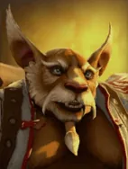
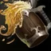

Cinder Brew
Active ability: Activates on Full Mana
Drenches an area in alcohol, causing enemy chess pieces within the area to lose some of their attacks. Taking spell damage causes affected enemies to ignite and extends the duration of igition on the enemies.
| ★ | ★★ | ★★★ | |
|---|---|---|---|
| MISS CHANCE | 30 | 50 | 70 |
| DURATION | 5 | ||
| MOVEMENT SLOW | 30 | ||
| RADIUS | 300 | 400 | 500 |
| IGNITION EXTENTION | 3 | 4 | 5 |
| Cooldown (s) | 12 | 10 | 8 |
| Mana cost | 100 | ||
The Order of the Oyos solution to all problems - another round!
Stats
| ★ | ★★ | ★★★ | |
|---|---|---|---|
| Health | 600 | 1200 | 2400 |
| Mana | 100 | 100 | 100 |
| Armor | 3 | 3 | 3 |
| Magic resistance | 20% | 20% | 20% |
| Attack damage | 50–60 | 100–120 | 200–240 |
| Attack interval (s) | 1.5 | 1.5 | 1.5 |
| Attack range | 205 | 205 | 205 |
| Move speed | 500 | 500 | 500 |
 Pandaren · Hospitality
Pandaren · Hospitality
- (1) Each round, a chance to receive a random piece that shares a race with one of your board pieces. Pieces already on your board and pieces you already have at 3 stars are skipped. The chance starts at ~6.8%, rises after every miss and resets when you catch something.
- (2) Also, each Pandaren on your board has a 15% chance (same pity and luck multipliers) to bring a copy of itself.
 Monk · Drunken Stagger
Monk · Drunken Stagger
- (2) Melee Monks have a chance to instantly kill an enemy below 20% HP when they damage it. The chance is higher for bigger hits and lower target HP (roughly 10-23% for a 150-damage hit at 15%-5% HP).
- (4) All Monks have a chance to halve the current HP of an enemy at 40%+ HP when they damage it. Chance = 20% x √(damage/100) (for example 20% for 100 damage, 40% for 400).
- (6) Monks heal for the HP removed by their halving effect.